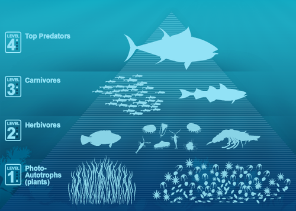

Sat, 18 Sep 2010 18:33:00 · NatGeo · eating · environment · fishing · healthy · national geography · seafood · china
What We Eat Makes A Difference
If you like eating fish, learn how to eat healthy while lowering your seafood footprint. Wisely choose the kind of fish you eat will impact the Marine Food Chain in general. A top predator requires exponentially more energy to survive than does a fish at lower level of the food chain.
Every year, more than 170 billion pounds [77.9 million metric tons] of wild fish and shellfish are caught in the oceans - that’s roughly three times the weight of every man, woman and child in the United States.

When wealthy nations catch or buy top predators, they increase their impact on the ocean compared to poor nations, which tend to eat smaller fish. Surprisingly, China comes top on the list of country who catch and consume more fish globally.
Read more on National Geography here and for some extra in-depth report on Global Seafood crisis, read here.